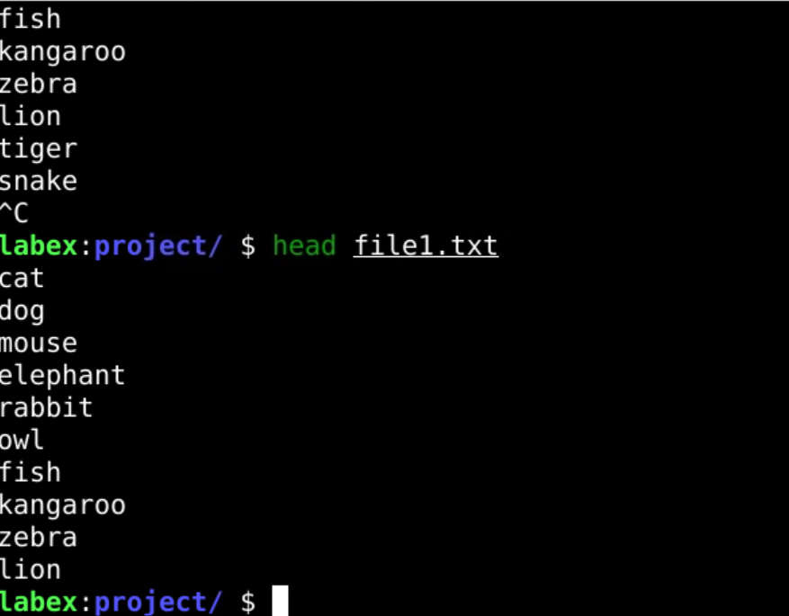

Overview
The head command is used to display the first lines of a file. By default, it shows the first 10 lines.
What Does HEAD Command Do?
The head command is used to:
- Preview the start of a file.
- Analyze data from large text files.
- Extract specific sections of files.
Example
# Display the first 10 lines of a file
head file.txt
# Display the first 20 lines
head -n 20 file.txtExample Output

The image above shows an example of the output from the 'head' command, displaying processes sorted by CPU usage.